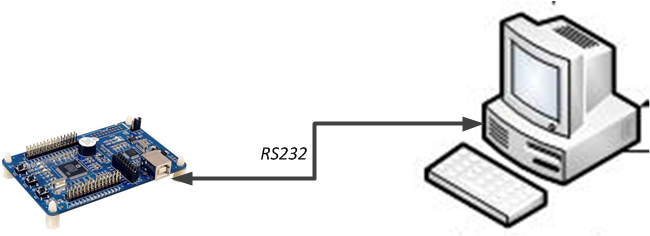
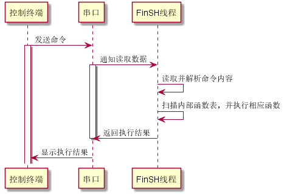

控 制 台¶
在计算机发展的早期，图形系统出现之前，没有鼠标，甚至没有键盘。那时候人们如何与计算机交互呢？最早期的计算机使用打孔的纸条向计算机输入命令，编写程序。后来随着计算机的不断发展，显示器、键盘成为计算机的标准配置，但此时的操作系统还不支持图形界面，计算机先驱们开发了一种软件，它接受用户输入的命令，解释之后，传递给操作系统，并将操作系统执行的结果返回给用户。这个程序像一层外壳包裹在操作系统的外面，所以它被称为 shell。
嵌入式设备通常需要将开发板与 PC 机连接起来通讯，常见连接方式包括：串口、USB、以太网、Wi-Fi 等。一个灵活的 shell 也应该支持在多种连接方式上工作。有了 shell，就像在开发者和计算机之间架起了一座沟通的桥梁，开发者能很方便的获取系统的运行情况，并通过命令控制系统的运行。特别是在调试阶段，有了 shell，开发者除了能更快的定位到问题之外，也能利用 shell 调用测试函数，改变测试函数的参数，减少代码的烧录次数，缩短项目的开发时间。
FinSH 是 RT-Thread 的命令行组件（shell），正是基于上面这些考虑而诞生的，FinSH 的发音为 [ˈfɪnʃ]。读完本章，我们会对 FinSH 的工作方式以及如何导出自己的命令到 FinSH 有更加深入的了解。
FinSH 简介¶
FinSH 是 RT-Thread 的命令行组件，提供一套供用户在命令行调用的操作接口，主要用于调试或查看系统信息。它可以使用串口 / 以太网 / USB 等与 PC 机进行通信，硬件拓扑结构如下图所示：

用户在控制终端输入命令，控制终端通过串口、USB、网络等方式将命令传给设备里的 FinSH，FinSH 会读取设备输入命令，解析并自动扫描内部函数表，寻找对应函数名，执行函数后输出回应，回应通过原路返回，将结果显示在控制终端上。
当使用串口连接设备与控制终端时，FinSH 命令的执行流程，如下图所示：

FinSH 支持权限验证功能，系统在启动后会进行权限验证，只有权限验证通过，才会开启 FinSH 功能，提升系统输入的安全性。
FinSH 支持自动补全、查看历史命令等功能，通过键盘上的按键可以很方便的使用这些功能，FinSH 支持的按键如下表所示：
| 按键 | 功能描述 |
|---|---|
| Tab 键 | 当没有输入任何字符时按下 Tab 键将会打印当前系统支持的所有命令。若已经输入部分字符时按下 Tab 键，将会查找匹配的命令，也会按照文件系统的当前目录下的文件名进行补全，并可以继续输入，多次补全 |
| ↑↓键 | 上下翻阅最近输入的历史命令 |
| 退格键 | 删除符 |
| ←→键 | 向左或向右移动标 |
FinSH 支持命令行模式，此模式又称为 msh(module shell)，msh 模式下，FinSH 与传统 shell（dos/bash）执行方式一致，例如，可以通过 cd / 命令将目录切换至根目录。
msh 通过解析，将输入字符分解成以空格区分开的命令和参数。其命令执行格式如下所示：
command [arg1] [arg2] [...]
其中 command 既可以是 RT-Thread 内置的命令，也可以是可执行的文件。
FinSH 内置命令¶
在 RT-Thread 中默认内置了一些 FinSH 命令，在 FinSH 中输入 help 后回车或者直接按下 Tab 键，就可以打印当前系统支持的所有命令。
msh 模式下，按下 Tab 键后可以列出当前支持的所有命令。默认命令的数量不是固定的，RT-Thread 的各个组件会向 FinSH 输出一些命令。例如，当打开 DFS 组件时，就会把 ls，cp，cd 等命令加到 FinSH 中，方便开发者调试。
以下为按下 Tab 键后打印出来的当前支持的所有显示 RT-Thread 内核状态信息的命令，左边是命令名称，右边是关于命令的描述：
msh />
RT-Thread shell commands:
pin - pin [option]
reboot - Reboot System
help - RT-Thread shell help.
ps - List threads in the system.
free - Show the memory usage in the system
clear - clear the terminal screen
version - show RT-Thread version information
list - list objects
msh />list
Usage: list [options]
[options]:
thread - list threads
timer - list timers
sem - list semaphores
mutex - list mutexs
event - list events
mailbox - list mailboxs
msgqueue - list message queues
memheap - list memory heaps
mempool - list memory pools
device - list devices
fd - list file descriptors
msh />
这里列出输入常用命令后返回的字段信息，方便开发者理解返回的信息内容。
显示线程状态¶
使用 ps 或者 list thread 命令来列出系统中的所有线程信息，包括线程优先级、状态、栈的最大使用量等。
msh />list thread
thread pri status sp stack size max used left tick error
-------- --- ------- ---------- ---------- ------ ---------- ---
tshell 20 running 0x00000160 0x00001000 15% 0x00000003 OK
aio 128 suspend 0x00000084 0x00000800 06% 0x0000000a OK
sys work 23 suspend 0x00000084 0x00000800 06% 0x0000000a OK
tidle0 255 ready 0x0000005c 0x00001000 04% 0x00000016 OK
timer 4 suspend 0x00000078 0x00000400 11% 0x00000009 OK| 字段 | 描述 |
|---|---|
| thread | 线程的名称 |
| pri | 线程的优先级 |
| status | 线程当前的状态 |
| sp | 线程当前的栈位置 |
| stack size | 线程的栈大小 |
| max used | 线程历史中使用的最大栈位置 |
| left tick | 线程剩余的运行节拍数 |
| error | 线程的错误码 |
显示信号量状态¶
使用 list sem 命令来显示系统中所有信号量信息，包括信号量的名称、信号量的值和等待这个信号量的线程数目。
msh />list sem
semaphor v suspend thread
-------- --- --------------
shrx 000 0
sem_sd0 001 0
psem 001 0
pmq 001 0
wqueue 000 0
sd_ack 000 0
wqueue 000 0list sem 返回字段的描述:
| 字段 | 描述 |
|---|---|
| semaphore | 信号量的名称 |
| v | 信号量当前的值 |
| suspend thread | 等待这个信号量的线程数目 |
显示事件状态¶
使用 list event 命令来显示系统中所有的事件信息，包括事件名称、事件的值和等待这个事件的线程数目。
msh />list event
event set suspend thread
----- ---------- --------------list event 返回字段的描述:
| 字段 | 描述 |
|---|---|
| event | 事件集的名称 |
| set | 事件集中当前发生的事件 |
| suspend thread | 在这个事件集中等待事件的线程数目 |
显示互斥量状态¶
使用 list mutex 命令来显示系统中所有的互斥量信息，包括互斥量名称、互斥量的所有者和所有者在互斥量上持有的嵌套次数等。
msh />list mutex
mutex owner hold suspend thread priority
-------- -------- ---- -------------- --------
fat0 (NULL) 0000 0 255
sd_bus_l (NULL) 0000 0 255
fdlock (NULL) 0000 0 255
fslock (NULL) 0000 0 255
dfs_mgr (NULL) 0000 0 255
heap (NULL) 0000 0 255list mutex 返回字段的描述:
| 字段 | 描述 |
|---|---|
| mutxe | 互斥量的名称 |
| owner | 当前持有互斥量的线程 |
| hold | 持有者在这个互斥量上嵌套持有的次数 |
| suspend thread | 等待这个互斥量的线程数目 |
| priority | 持有线程的优先级 |
显示邮箱状态¶
使用 list mailbox 命令显示系统中所有的邮箱信息，包括邮箱名称、邮箱中邮件的数目和邮箱能容纳邮件的最大数目等。
msh />list mailbox
mailbox entry size suspend thread
-------- ---- ---- --------------
mmcsdhot 0001 0004 0
mmcsdmb 0000 0004 1:mmcsd_delist mailbox 返回字段的描述:
| 字段 | 描述 |
|---|---|
| mailbox | 邮箱的名称 |
| entry | 邮箱中包含的邮件数目 |
| size | 邮箱能够容纳的最大邮件数目 |
| suspend thread | 等待这个邮箱的线程数目 |
显示消息队列状态¶
使用 list msgqueue 命令来显示系统中所有的消息队列信息，包括消息队列的名称、包含的消息数目和等待这个消息队列的线程数目。
msh />list msgqueue
msgqueue entry suspend thread
-------- ---- --------------list msgqueue 返回字段的描述:
| 字段 | 描述 |
|---|---|
| msgqueue | 消息队列的名称 |
| entry | 消息队列当前包含的消息数目 |
| suspend thread | 等待这个消息队列的线程数目 |
显示内存池状态¶
使用 list mempool 命令来显示系统中所有的内存池信息，包括内存池的名称、内存池的大小和最大使用的内存大小等。
msh />list mempool
mempool block total free suspend thread
------- ---- ---- ---- --------------
signal 0012 0032 0032 0list mempool 返回字段的描述:
| 字段 | 描述 |
|---|---|
| mempool | 内存池名称 |
| block | 内存块大小 |
| total | 总内存块 |
| free | 空闲内存块 |
| suspend thread | 等待这个内存池的线程数目 |
显示定时器状态¶
使用 list timer 命令来显示系统中所有的定时器信息，包括定时器的名称、是否是周期性定时器和定时器超时的节拍数等。
msh />list timer
timer periodic timeout activated mode
-------- ---------- ---------- ----------- ---------
tshell 0x00000000 0x00000000 deactivated one shot
aio 0x00000000 0x00000000 deactivated one shot
mmcsd_de 0x00000001 0x0000000d deactivated one shot
sys work 0x00000000 0x00000000 deactivated one shot
tidle0 0x00000000 0x00000000 deactivated one shot
timer 0x00000000 0x00000000 deactivated one shot
current tick:0x00017c0dlist timer 返回字段的描述:
| 字段 | 描述 |
|---|---|
| timer | 定时器的名称 |
| periodic | 定时器是否是周期性的 |
| timeout | 定时器超时时的节拍数 |
| activated | 定时器的状态，activated 表示活动的，deactivated 表示不活动的 |
| mode | 定时器类型，one shot 表示单次定时，periodic 表示周期定时 |
current tick 表示当前系统的 tick 数。
显示设备状态¶
使用 list device 命令来显示系统中所有的设备信息，包括设备名称、设备类型和设备被打开次数。
msh />list device
device type ref count
-------- -------------------- ----------
sd Block Device 1
rtc RTC 0
zero Miscellaneous Device 0
shm Unknown 0
uart1 Character Device 0
uart0 Character Device 2list device 返回字段的描述:
| 字段 | 描述 |
|---|---|
| device | 设备的名称 |
| type | 设备的类型 |
| ref count | 设备被打开次数 |
显示动态内存状态¶
使用 free 命令来显示系统中所有的内存信息。
msh />free
total : 66606976
used : 17792
maximum : 20000
available: 66589184free 返回字段的描述:
| 字段 | 描述 |
|---|---|
| total memory | 内存总大小 |
| used memory | 已使用的内存大小 |
| maximum allocated memory | 最大分配内存 |
| available | 可用内存大小 |
自定义 FinSH 命令¶
除了 FinSH 自带的命令，FinSH 还也提供了多个宏接口来导出自定义命令，导出的命令可以直接在 FinSH 中执行。
自定义 msh 命令¶
自定义的 msh 命令，可以在 msh 模式下被运行，将一个命令导出到 msh 模式可以使用如下宏接口：
MSH_CMD_EXPORT(name, desc);
| 参数 | 描述 |
|---|---|
| name | 要导出的命令 |
| desc | 导出命令的描述 |
这个命令可以导出有参数的命令，也可以导出无参数的命令。导出无参数命令时，函数的入参为 void，示例如下：
void hello(void)
{
rt_kprintf("hello RT-Thread!\n");
}
MSH_CMD_EXPORT(hello , say hello to RT-Thread);导出有参数的命令时，函数的入参为 int argc 和 char**argv。argc 表示参数的个数，argv 表示命令行参数字符串指针数组指针。导出有参数命令示例如下：
static void atcmd(int argc, char**argv)
{
……
}
MSH_CMD_EXPORT(atcmd, atcmd sample: atcmd <server|client>);自定义命令重命名¶
FinSH 的函数名字长度有一定限制，它由 finsh.h 中的宏定义 FINSH_NAME_MAX 控制，默认是 16 字节，这意味着 FinSH 命令长度不会超过 16 字节。这里有个潜在的问题：当一个函数名长度超过 FINSH_NAME_MAX 时，使用 FINSH_FUNCTION_EXPORT 导出这个函数到命令表中后，在 FinSH 符号表中看到完整的函数名，但是完整输入执行会出现 null node 错误。这是因为虽然显示了完整的函数名，但是实际上 FinSH 中却保存了前 16 字节作为命令，过多的输入会导致无法正确找到命令，这时就可以使用 FINSH_FUNCTION_EXPORT_ALIAS 来对导出的命令进行重命名。
FINSH_FUNCTION_EXPORT_ALIAS(name, alias, desc);
| 参数 | 描述 |
|---|---|
| name | 要导出的命令 |
| alias | 导出到 FinSH 时显示的名字 |
| desc | 导出命令的描述 |
在重命名的命令名字前加 __cmd_ 就可以将命令导出到 msh 模式，否则，命令会被导出到 C-Style 模式。以下示例定义了一个 hello 函数，并将它重命名为 ho 后导出成 C-Style 模式下的命令。
void hello(void)
{
rt_kprintf("hello RT-Thread!\n");
}
FINSH_FUNCTION_EXPORT_ALIAS(hello , ho, say hello to RT-Thread);FinSH 功能配置¶
FinSH 功能可以裁剪，宏配置选项在 rtconfig.h 文件中定义，具体配置项如下表所示。
| 宏定义 | 取值类型 | 描述 | 默认值 |
|---|---|---|---|
| #define RT_USING_FINSH | 无 | 使能 FinSH | 开启 |
| #define FINSH_THREAD_NAME | 字符串 | FinSH 线程的名字 | "tshell" |
| #define FINSH_USING_HISTORY | 无 | 打开历史回溯功能 | 开启 |
| #define FINSH_HISTORY_LINES | 整数型 | 能回溯的历史命令行数 | 5 |
| #define FINSH_USING_SYMTAB | 无 | 可以在 FinSH 中使用符号表 | 开启 |
| #define FINSH_USING_DESCRIPTION | 无 | 给每个 FinSH 的符号添加一段描述 | 开启 |
| #define FINSH_USING_MSH | 无 | 使能 msh 模式 | 开启 |
| #define FINSH_ARG_MAX | 整数型 | 最大输入参数数量 | 10 |
| #define FINSH_USING_AUTH | 无 | 使能权限验证 | 关闭 |
| #define FINSH_DEFAULT_PASSWORD | 字符串 | 权限验证密码 | 关闭 |
rtconfig.h 中的参考配置示例如下所示，可以根据实际功能需求情况进行配置。
/* 开启 FinSH */
#define RT_USING_FINSH
/* 将线程名称定义为 tshell */
#define FINSH_THREAD_NAME "tshell"
/* 开启历史命令 */
#define FINSH_USING_HISTORY
/* 记录 5 行历史命令 */
#define FINSH_HISTORY_LINES 5
/* 开启使用 Tab 键 */
#define FINSH_USING_SYMTAB
/* 开启描述功能 */
#define FINSH_USING_DESCRIPTION
/* 定义 FinSH 线程优先级为 20 */
#define FINSH_THREAD_PRIORITY 20
/* 定义 FinSH 线程的栈大小为 4KB */
#define FINSH_THREAD_STACK_SIZE 4096
/* 定义命令字符长度为 80 字节 */
#define FINSH_CMD_SIZE 80
/* 开启 msh 功能 */
#define FINSH_USING_MSH
/* 最大输入参数数量为 10 个 */
#define FINSH_ARG_MAX 10FinSH 应用示例¶
不带参数的 msh 命令示例¶
本小节将演示如何将一个自定义的命令导出到 msh 中，示例代码如下所示，代码中创建了 hello 函数，然后通过 MSH_CMD_EXPORT 命令即可将 hello 函数导出到 FinSH 命令列表中。
#include <rtthread.h>
void hello(void)
{
rt_kprintf("hello RT-Thread!\n");
}
MSH_CMD_EXPORT(hello , say hello to RT-Thread);系统运行起来后，在 FinSH 控制台按 tab 键可以看到导出的命令：
msh />
RT-Thread shell commands:
hello - say hello to RT-Thread
version - show RT-Thread version information
……运行 hello 命令，运行结果如下所示：
msh />hello
hello RT_Thread!
msh />带参数的 msh 命令示例¶
本小节将演示如何将一个带参数的自定义的命令导出到 FinSH 中, 示例代码如下所示，代码中创建了 atcmd() 函数，然后通过 MSH_CMD_EXPORT 命令即可将 atcmd() 函数导出到 msh 命令列表中。
#include <rtthread.h>
static void atcmd(int argc, char**argv)
{
if (argc < 2)
{
rt_kprintf("Please input'atcmd <server|client>'\n");
return;
}
if (!rt_strcmp(argv[1], "server"))
{
rt_kprintf("AT server!\n");
}
else if (!rt_strcmp(argv[1], "client"))
{
rt_kprintf("AT client!\n");
}
else
{
rt_kprintf("Please input'atcmd <server|client>'\n");
}
}
MSH_CMD_EXPORT(atcmd, atcmd sample: atcmd <server|client>);系统运行起来后，在 FinSH 控制台按 tab 键可以看到导出的命令：
msh />
RT-Thread shell commands:
hello - say hello to RT-Thread
atcmd - atcmd sample: atcmd <server|client>
version - show RT-Thread version information
……运行 atcmd 命令，运行结果如下所示：
msh />atcmd
Please input 'atcmd <server|client>'
msh />运行 atcmd server 命令，运行结果如下所示：
msh />atcmd server
AT server!
msh />运行 atcmd client 命令，运行结果如下所示：
msh />atcmd client
AT client!
msh />FinSH 移植¶
FinSH 完全采用 ANSI C 编写，具备极好的移植性；内存占用少，如果不使用前面章节中介绍的函数方式动态地向 FinSH 添加符号，FinSH 将不会动态申请内存。FinSH 源码位于 components/finsh 目录下。移植 FinSH 需要注意以下几个方面：
- FinSH 线程：
每次的命令执行都是在 FinSH 线程（即 tshell 线程）的上下文中完成的。当定义 RT_USING_FINSH 宏时，就可以在初始化线程中调用 finsh_system_init() 初始化 FinSH 线程。RT-Thread 1.2.0 之后的版本中可以不使用 finsh_set_device(const char* device_name) 函数去显式指定使用的设备，而是会自动调用 rt_console_get_device() 函数去使用 console 设备（RT-Thread 1.1.x 及以下版本中必须使用 finsh_set_device(const char* device_name) 指定 FinSH 使用的设备）。FinSH 线程在函数 finsh_system_init() 函数中被创建，它将一直等待 rx_sem 信号量。
- FinSH 的输出：
FinSH 的输出依赖于系统的输出，在 RT-Thread 中依赖 rt_kprintf() 输出。在启动函数 rt_hw_board_init() 中， rt_console_set_device(const char* name) 函数设置了 FinSH 的打印输出设备。
- FinSH 的输入：
FinSH 线程在获得了 rx_sem 信号量后，调用 rt_device_read() 函数从设备 (选用串口设备) 中获得一个字符然后处理。所以 FinSH 的移植需要 rt_device_read() 函数的实现。而 rx_sem 信号量的释放通过调用 rx_indicate() 函数以完成对 FinSH 线程的输入通知。通常的过程是，当串口接收中断发生时（即串口有输入），接受中断服务例程调用 rx_indicate() 函数通知 FinSH 线程有输入，而后 FinSH 线程获取串口输入最后做相应的命令处理。